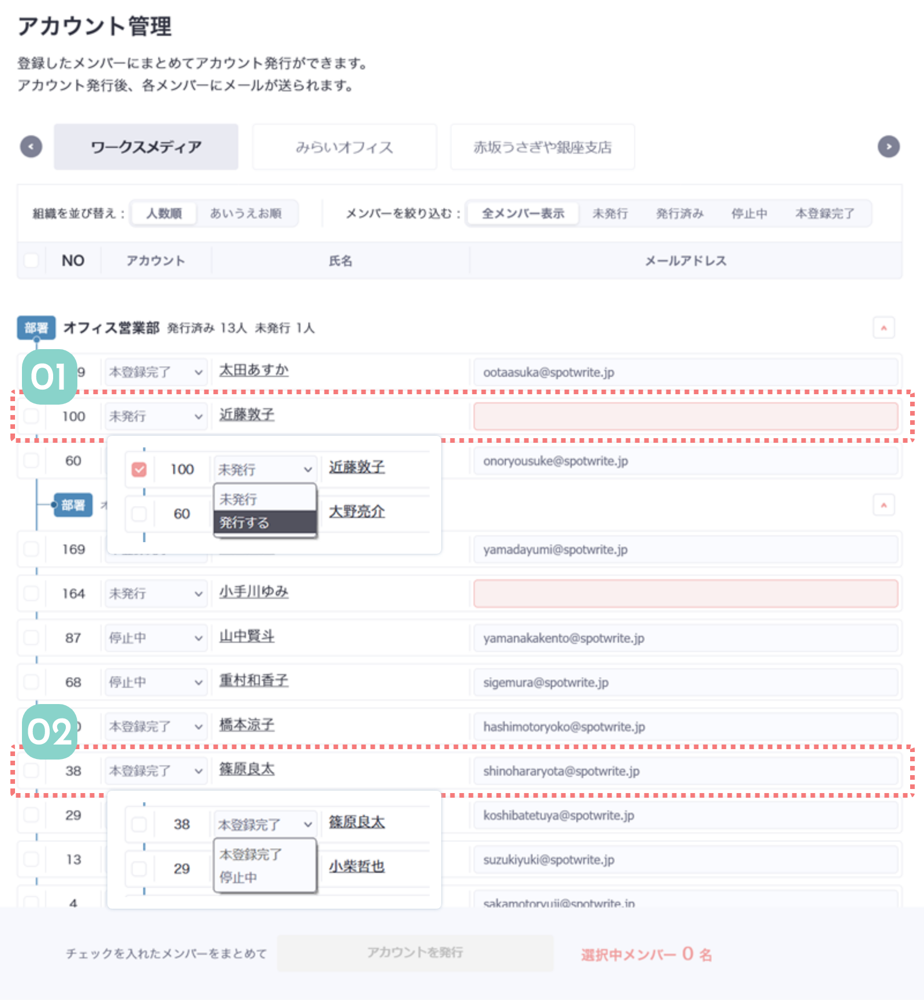

アカウント管理は、メンバー登録後に登録したメンバーに対して
アカウント招待のメールを送る画面です。
この画面でアカウント招待をしたか、招待されたメンバーが本登録を完了したかなどステータスをチェックすることもできます。

01
未発行のメンバーにアカウントを発行します
メンバー登録を行うと、登録されたメンバーが部署ごとにこの表に表示されます。
アカウントを発行したいメンバーの氏名を確認します。そのメンバーのメールアドレスを入力して、氏名の左側のプルダウンを「発行する」に変更すると招待メールの発信ができます。
メールアドレスを入力したメンバーを何名かまとめて発行したいときは、左側のチェックボックスからまとめて発行することもできます。
02
発行済みのメンバーはステータスが変わります
[01]の手順でアカウントを発行したメンバーは、ステータスが変わり「発行済み」になります。
ユーザーがメールをクリックして、Spotwriteの利用を始めるとこのステータスが「本登録完了」になります。
「本登録完了」のユーザーのアカウントを停止するには、ステータスのプルダウンで「停止中」を選択しましょう。

会社ごとにメンバーの絞り込みができます。
チェックボックスはステータスが「未発行」かつメールアドレスが入力済みのメンバーのみ選択できます。
アカウントのステータスで絞り込みができます。
チェックボックスにチェックを入れると、フッターのボタンが押せるようになりアカウント発行ができます。